Einführung in die objektorientierte Programmierung (OOP)...
Burkhard Hoppenstedt, 11.10.2022
... anhand eines erstaunlichen Beispiels
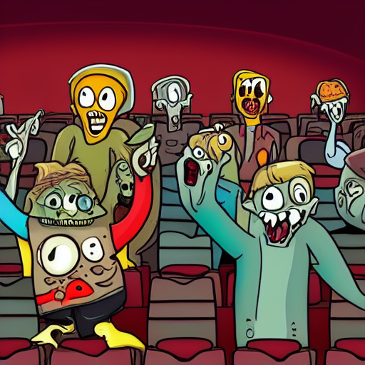Das bin ich

Diese Präsentation
- Materialien, Code und Folien sind unter https://github.com/bjhhnu/bjhhnu.github.io vorhanden.
- Folien mit wichtigem Theorieinhalt sind mit dem Symbol markiert. Ein Dokument ohne die Gestalterischen Folien (z.B. zum Notizen machen) befindet sich unter /materialien/Notizen.pdf.
- Wichtigste Steuerelemente für die Präsentation sind (ESC) für die Übersicht, (SPACE) für die Navigation in Reihenfolge und die Pfeiltasten.
Was bisher geschah...
Einordnung in das Studium
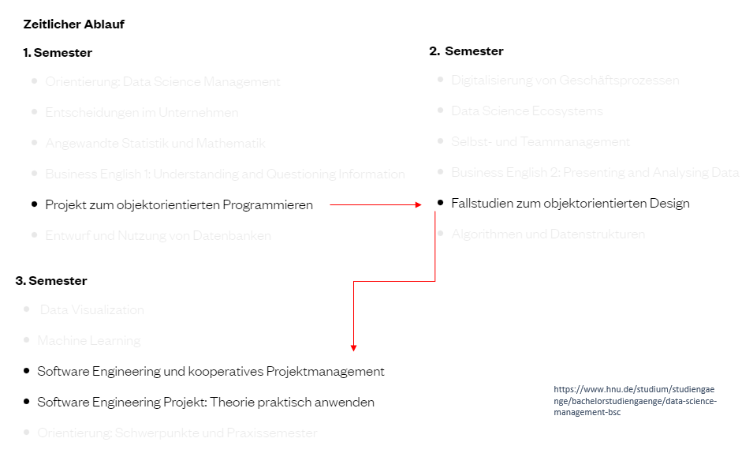Lernziele
- Grundverständnis des Konzeptes OOP
- Wichtigste Grundbegriffe kennen
- OOP Grundlagen in Python gesehen haben
Theorie
Denken in Objekten/Modellen
Die Realität wird durch ein objektorientiertes Modell abgebildet. Hierbei findet eine Abstraktion statt. Ein Objekt kann einen Zustand und ein Verhalten haben.
Ein Beispiel: Das Eichhörnchen
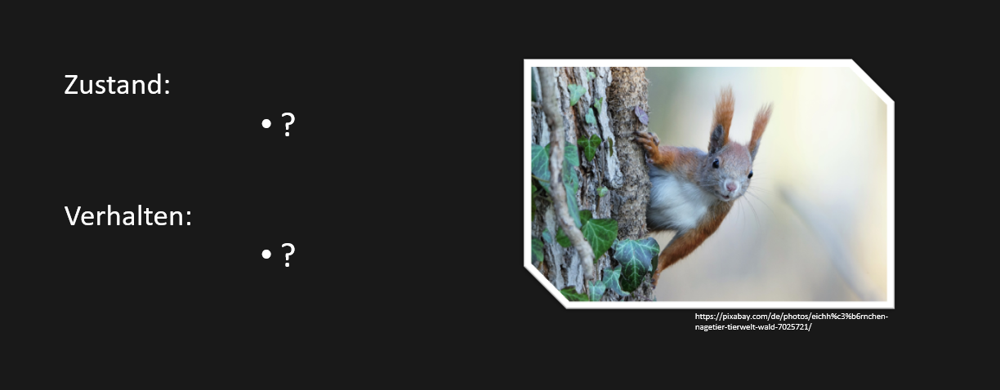Ein Beispiel: Das Eichhörnchen
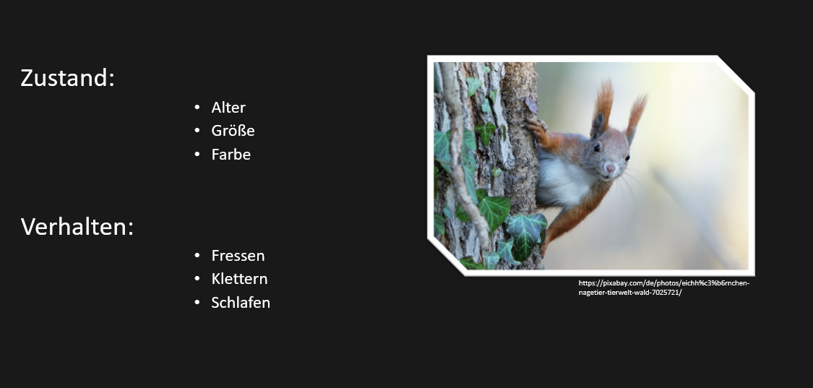Kombinationen und Beziehungen
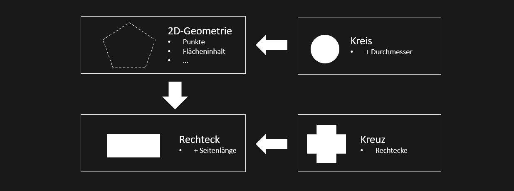Paradigmenwechsel
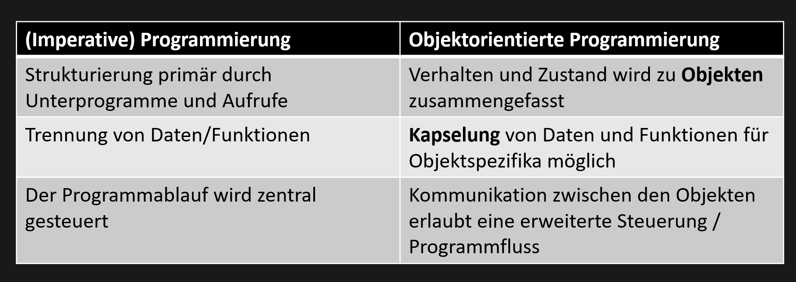Warum OOP im Software Engineering?
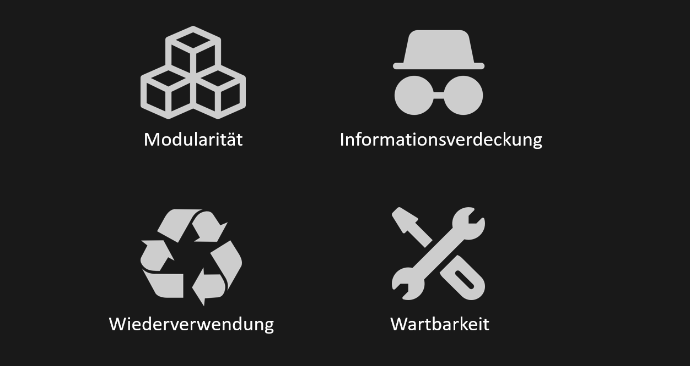Grundbegriffe
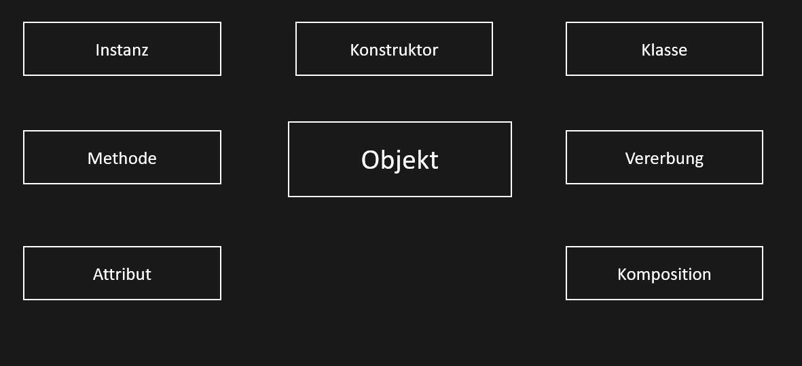Umsetzung & Übung
Frank Herzog
Game-Production und Management (B.A), 5. Semester
"Ich habe eine Idee..."
Zombies!!!
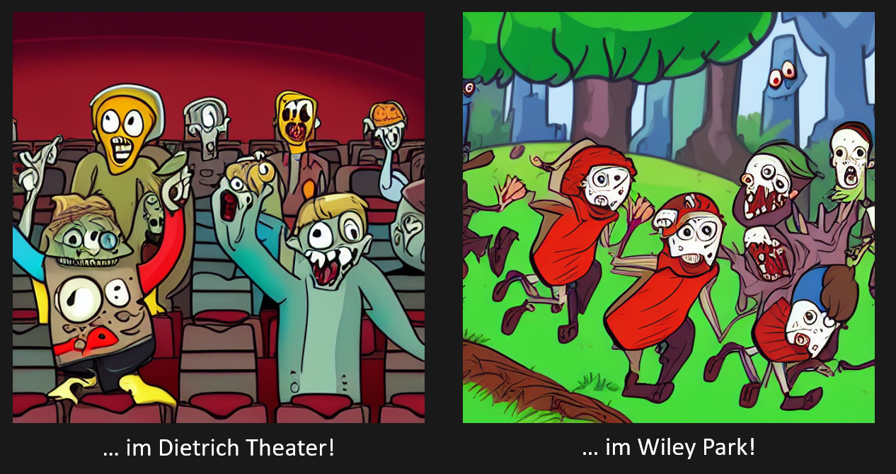Sie wollen gute Gehirne
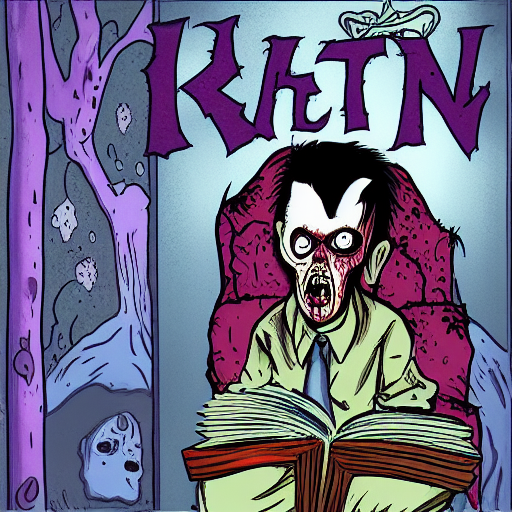Spielidee
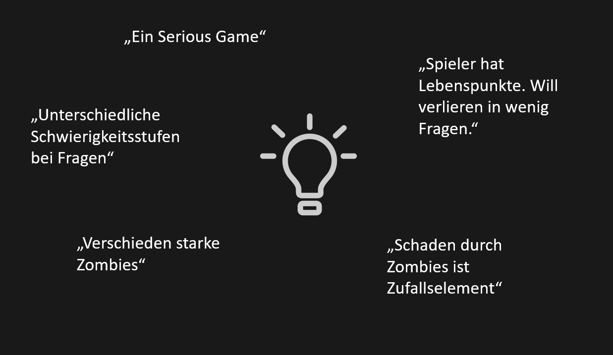Miro Brainstorming
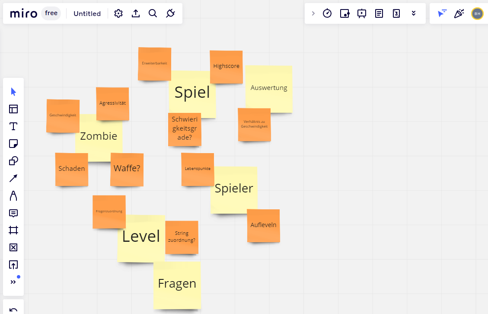Grundbegriffe (I)
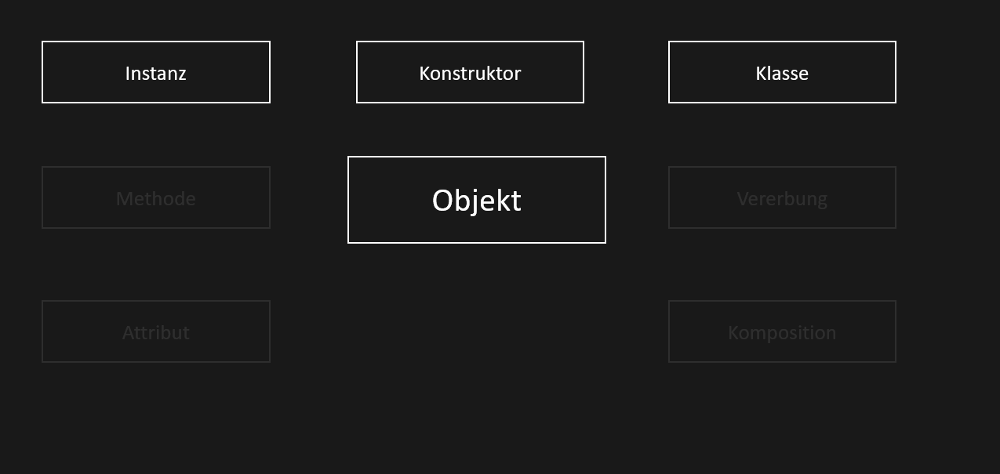Begriffe (I)
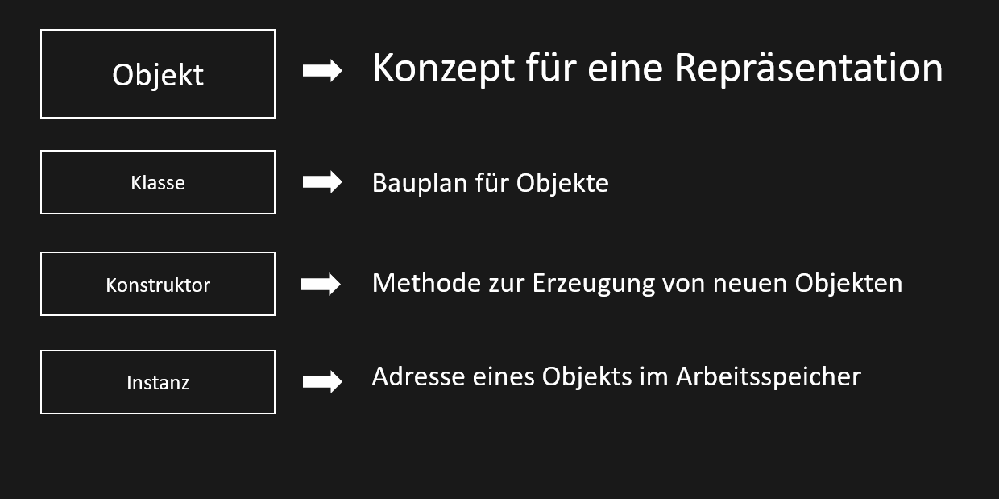Der Bauplan
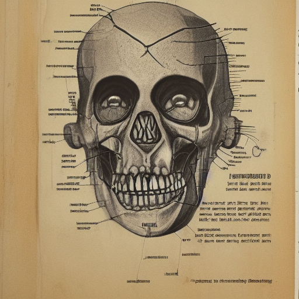Code
Klasse, Konstruktor, Instanz
Grundbegriffe (II)
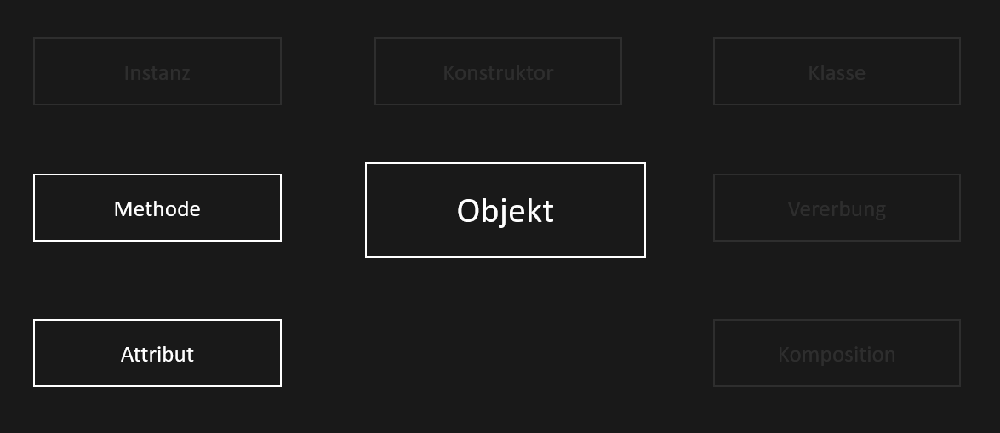Begriffe (II)
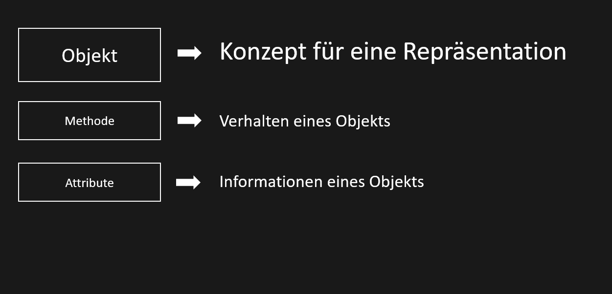Code
Attribute. Klassen- und Instanzvariablen
Übung: Methode und Konstruktor
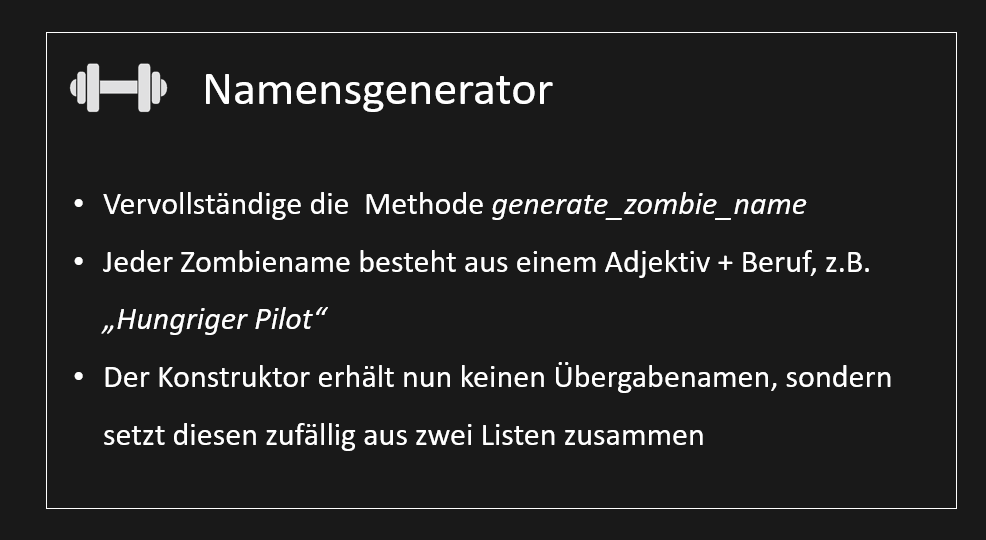Übung Konstruktor
Lösung Übung
Grundbegriffe (III)
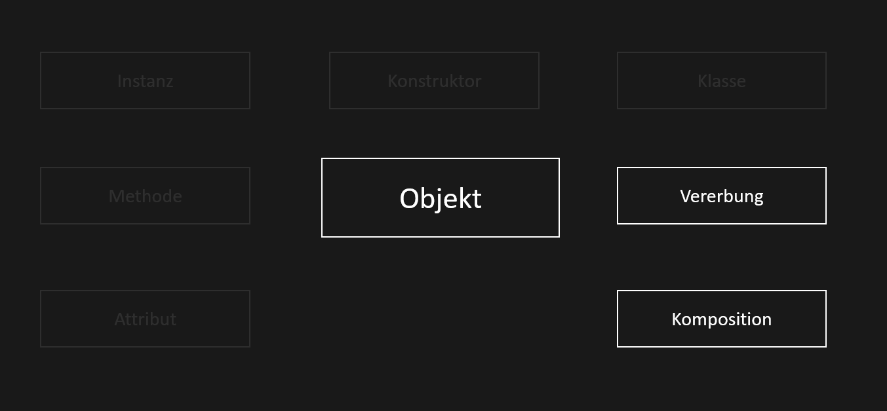Begriffe (III)
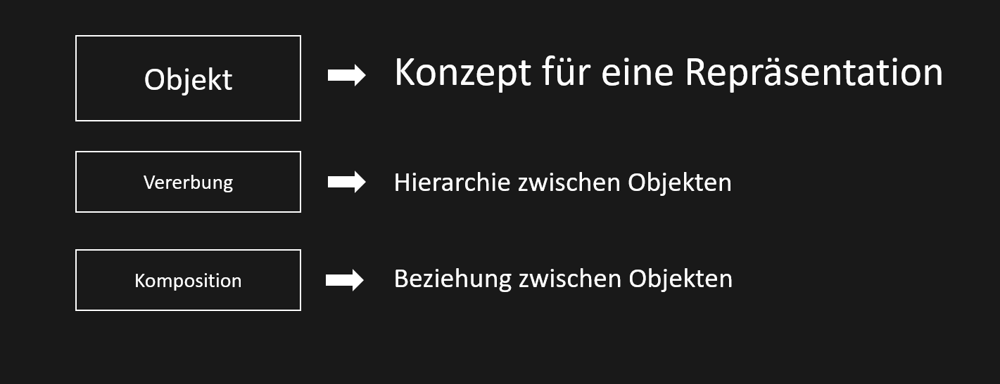Zähne zeigen!
Welchen Schaden machen die Zombies?
Liu Nianzu
Data Science Management, 3. Semester

"Vielleicht eine Verteilungsfunktion?"
Normalverteilung
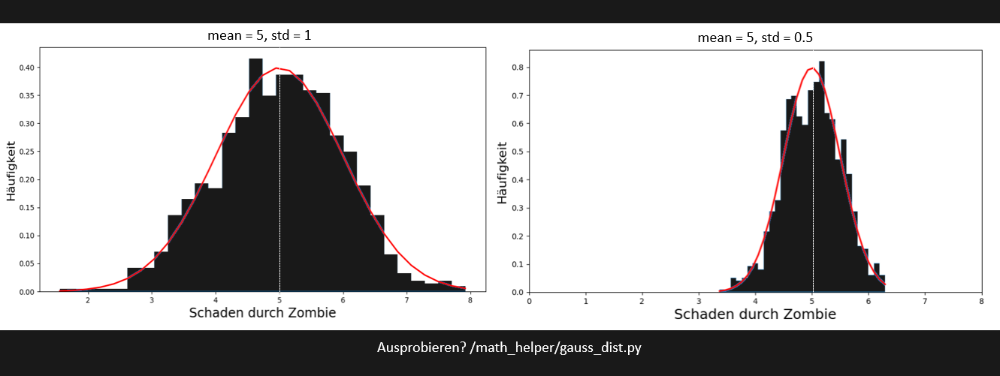Übung Vererbung
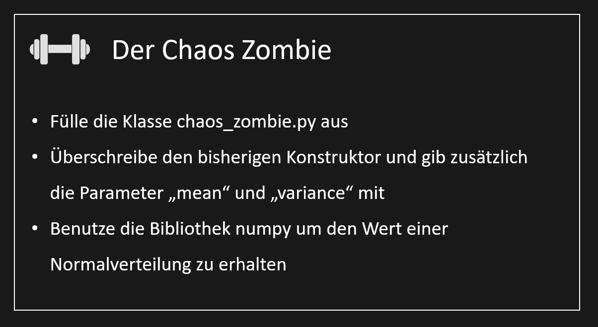Übung: Vererbung